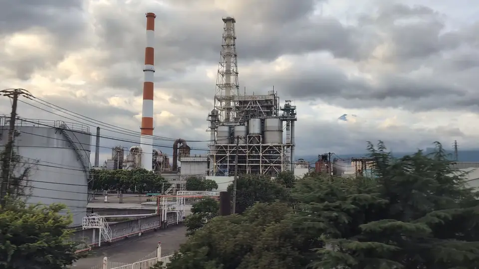
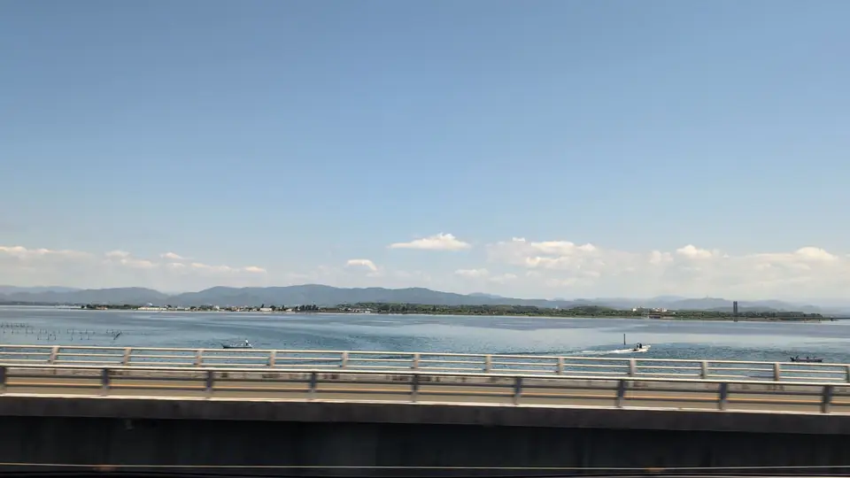

FIVE VIEWS
富士山が窓にある区間は、東京〜新大阪に5つ
いちばん大きく、長く見えるのは三島〜富士川です。のぞみなら東京から約43〜47分、新大阪から約1時間40分（京都から約1時間25分）。窓いっぱいの富士山が約3〜4分続きます。席は上りも下りもE席、狙い目は冬の晴れた午前です。
ほかにも、相模平野ごしの富士、A席側に回り込む左富士、都内や浜名湖から小さく見える富士があります。


FOREGROUNDS
いちばん長い区間では、富士山の前を街と川が流れる
三島〜富士川の約4分は、富士山が「何度も現れる」のではなく、ずっと窓にあり続ける区間です。動いているのは手前だけ。街、赤白の煙突、そして川と白いアーチが、同じ富士山の前を順番に通り過ぎます。だから下の2枚は別々の富士山ではなく、同じ富士山を、別の前景ごしに見た1枚ずつです。どちらもE席側。

SEASONS & HOURS
同じ富士山でも、季節と時間で別の山に見える
三島〜新富士の同じ窓でも、季節と時間で富士山の顔は大きく変わります。雪をかぶるのは秋の終わりから初夏まで。夏は雪がなく、空に溶けて輪郭がやわらぎます。日が傾くと、稜線だけが空に残ります。
 初夏 · 田んぼの緑と
6月。稲の緑と山肌のコントラストがいちばん強い時期です。写真 @STTraveler
初夏 · 田んぼの緑と
6月。稲の緑と山肌のコントラストがいちばん強い時期です。写真 @STTraveler
CLOUDY DAYS
曇りで富士山が見えない日は、同じ窓の手前を見る
富士山は年の半分ほど霞や雲に隠れます。低い雲が消すのは富士山だけではなく、遠くの山も広い眺めも同じように霞みます。それでも線路に近い景色は輪郭が残るので、富士山を狙っていたその時刻に、そのまま手前へ目を移すのがいちばん確実です。5区間のうち3つには、天気に左右されにくい「手前」があります。
 約27分E席
区間1の手前 · 日向岡
相模平野の富士山が霞んでいても、丘の上に並ぶカラフルな三角屋根は残ります。
約27分E席
区間1の手前 · 日向岡
相模平野の富士山が霞んでいても、丘の上に並ぶカラフルな三角屋根は残ります。

約44分E席 区間2の手前 · 富士の製紙工場 晴れた日は富士山の前景。曇りの日は、この赤白の煙突とプラントのほうが主役になります。
約73分E席 区間5の手前 · 浜名湖 湖の奥の富士山が消えても、手前の湖面はそのまま残ります。曇りはむしろ水の色が深くなる。残る区間3（約54分・左富士）と区間4（約10分・都内）は、もともと一瞬の勝負か、空気が澄んだ日だけの富士山です。曇りの日は数えないほうが気が楽です。富士山を離れれば、駅のすぐ横に立つ掛川城のように天気に強い車窓がほかにもあります——残りは車窓図鑑で。
夜の便では富士山は見えません。三島〜新富士を日没後に通るなら、夜景ガイドで暗くなる時刻と見える場所を確かめてください。
富士山の雲も楽しむ
山頂に帽子のような雲が重なったら、笠雲かもしれません。山の隣に浮かぶつるし雲も、車窓の楽しみの一つ。笠雲・つるし雲の見分け方と、実際の投稿を「一度きりの車窓」に集めています。
SEAT E
E席の取り方、3ステップ
- 列車はどれでも。のぞみ・ひかり・こだま、車窓は同じです。E席は普通車の富士山側の窓席です。事前にE席を確保したい場合は指定席を予約してください（自由席の設定や料金は列車・乗車日で異なります。最新はJR東海の公式案内で）。窓の時間を長く楽しむならひかり・こだまも悪くありません（グリーン車は2+2なのでD席が富士山側）。
- 指定席の座席表で「E」を選ぶ。券売機・みどりの窓口・スマートEXのどれでも。終点で座席の向きを転換するため、上りも下りもE席。左右を覚える必要はありません。二人ならD+Eで。
- E席が満席なら、無理に移動しない。通路やデッキを塞がず、車内が空いていて安全に見られる窓がある場合だけ短時間で。難しければ今回はA席側の左富士や、両側から楽しめる浜名湖を狙いましょう。
YOUR TRAIN
乗る列車の、富士山の時刻を。
東京からの分数は目安です。乗る列車と乗車駅を選ぶと、停車時刻から推定した富士山の通過時刻と、ほかの車窓が並びます。
MORE WINDOWS
おすすめの車窓を、あなたの列車の時刻で
表示中の分数はのぞみの目安です。実際の時刻は停車駅や発車時刻で変わるため、乗る列車を選ぶと、全58景をその列車の通過予定時刻に置き換えます。